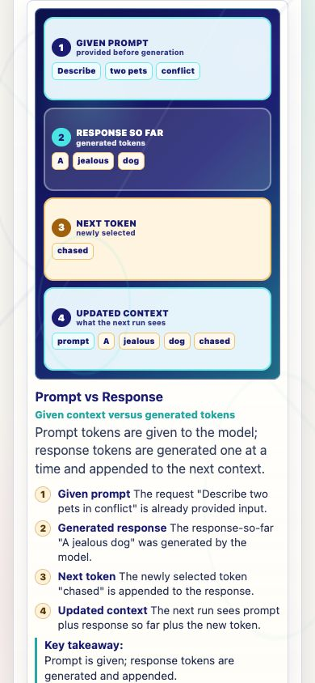
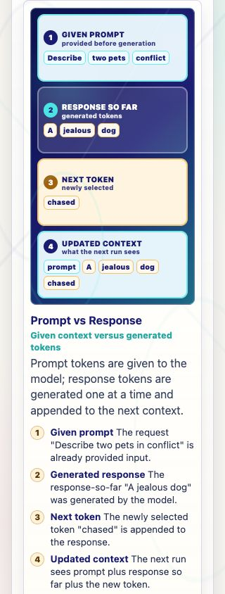

Prompt Life v0.26.5 Prompt Response Panel Padding
Trimmed the vertical padding inside the four rectangular Prompt vs Response visual panels.
Build, Pages build, typecheck, and answer audit passed.
What Changed
- Reduced the four panel cards' top and bottom padding by about half.
- Kept the horizontal padding, four-row structure, labels, and lesson content unchanged.
- Bumped the visible app version to
v0.26.5. - Updated the README cache-busting example to
?v=0265.
Files Changed
src/styles/global.csssrc/main.tsxpackage.jsonpackage-lock.jsonREADME.mddocs/REVIEW_NOTES.mddocs/reports/screenshots/v0-26-5-prompt-response-padding-390.pngdocs/reports/screenshots/v0-26-5-prompt-response-padding-320.png
Verification
npm run typecheck: passed.npm run build: passed with the existing Vite large-chunk warning.npm run build:pages: passed with the existing Vite large-chunk warning.npm run audit:answers: passed.- Browser QA: Prompt vs Response visual checked at 390px and 320px.
Screenshots


Known Issues
No new known issue from this pass. The production build still reports the existing Vite large-chunk warning.